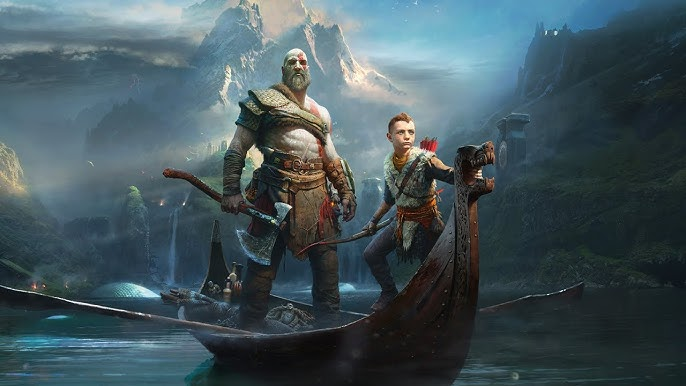
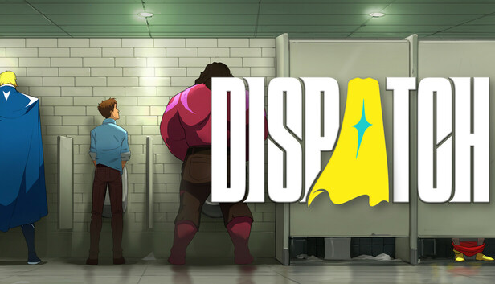

God of War

Gènere: Aventura
Any: 2018
Plataforma: PlayStation 4 / PlayStation 5 / PC
Precio: 20.00
Valoració: 9.4 (Más de 6400 valoraciones en la plataforma de Steam)
Descripció: Juego que continua la historia de Kratos en la mitología nórdica, con una nueva historia, sin dejar atrás su pasado, y con un nuevo sistema de combate
← Tornar al catàleg
God of War: Ragnarok

Gènere: Aventura
Any: 2022
Plataforma: PlayStation 4 / PlayStation 5 / PC
Precio: 60.00
Valoració: 9.8
Descripció: Después de los acontecimientos sucedidos anteriormente, el invierno eterno da comienzo y con ello el inicio del fin de Asgard (Ragnarok), Kratos deberá decidir si intervenir en la batalla contra Asgard o mantenerse al margen
← Tornar al catàleg
Marvel's Spiderman 2

Gènere: Aventura
Any: 2023
Plataforma: PS5 / PC
Precio: 59.99
Valoració: 9.2 (Más de 6400 valoraciones en la plataforma de Steam)
Descripció: Después de derrotar a su mentor y a los 6 siniestros, a Peter le tocará afrontar la invasión simbionte junto con Miles y MJ
← Tornar al catàleg
Elden Ring

Género: Rol de acción, soulslike
Año: 2022
Plataforma: PlayStation 5, PlayStation 4, PC, Xbox Series X and Series S, Xbox One
Precio: 20.00
Valoració: 9.4 (Más de 6400 valoraciones en la plataforma de Steam)
Descripció: Juego que continua la historia de Kratos en la mitología nórdica, con una nueva historia, sin dejar atrás su pasado, y con un nuevo sistema de combate
← Tornar al catàleg
God of War

Gènere: Aventura
Any: 2018
Plataforma: PlayStation 4 / PlayStation 5 / PC
Precio: 20.00
Valoració: 9.4 (Más de 6400 valoraciones en la plataforma de Steam)
Descripció: Juego que continua la historia de Kratos en la mitología nórdica, con una nueva historia, sin dejar atrás su pasado, y con un nuevo sistema de combate
← Tornar al catàleg